WMS Feature & Configuration Guide
End-to-end configuration of the warehouse: from the product record, through warehouse & location master data, into the custom WMS engines (putaway, cycle counting, transfers), quality, and handheld/label hardware — and how each setting drives run-time behaviour.
1Overview & layering
The WMS is delivered in two layers. Odoo Community stock provides the inventory backbone — products, locations, lots/serials, routes, reservations, valuation. On top, a set of custom modules add the directed-work logic that Community lacks (and Enterprise charges for): scored putaway, plan-driven cycle counting, rule-driven transfers, handheld scanning, full quality, and label printing.
| Module | Adds | Configured under |
|---|---|---|
| stock Native | Products, warehouses, locations, routes, lots/serials, packages, reordering, valuation | Inventory ▸ Configuration |
| custom_wms_putaway Custom | Tiered, scored putaway strategies & rules; bin volume capacity; ABC class | Inventory ▸ Configuration ▸ Putaway |
| custom_wms_cycle_count Custom | Cycle-count plans, sessions, variance approval | Inventory ▸ Operations ▸ Cycle Count |
| custom_wms_to_engine Custom | Transfer-order rules & orders (replenishment) | Inventory ▸ Operations ▸ Transfer Orders |
| custom_barcode Custom | Scan sessions (single/batch/cluster), GS1, label templates, printers | Inventory ▸ Barcode / Configuration |
| custom_hht_bridge Custom | Handheld device registry, secure REST API, offline sync, PWA | HHT app ▸ Devices |
| custom_quality_full Custom | Quality points/checks, NCR alerts, CAPA, e-signatures | Quality app ▸ Configuration |
Recommended configuration order
Each later layer reads attributes set in the earlier ones — e.g. putaway scoring reads the product's volume and abc_class, and the bin's volume_capacity_m3. Configure top-down.
2Product configuration
The product record is where most WMS behaviour originates. The fields below — mostly native, with one custom addition — determine whether stock is tracked, how it is traced, and how the engines slot, count and move it.
| Field | Where | Purpose & WMS impact |
|---|---|---|
| type / is_storable Native | Product ▸ General | Must be Goods + “Track Inventory” for the product to have quants, locations and appear in WMS flows. |
| tracking Native | Product ▸ Inventory | none / lot / serial. Lot/serial unlocks traceability, FEFO and per-lot counting. |
| expiration_date (lots) Native | Settings ▸ “Expiration Dates” | Enables FEFO removal and the expiry-approaching transfer trigger. |
| uom_id, uom_po_id Native | Product ▸ General | Stocking vs purchase unit; conversions applied across moves & counts. |
| volume Native | Product ▸ Inventory | Drives by_volume putaway scoring and the bin’s computed volume_used_m3. |
| weight Native | Product ▸ Inventory | Feeds storage-category weight limits and shipping. |
| barcode Native | Product ▸ General | Resolved on every handheld/scan lookup; can be auto-generated (§10). |
| abc_class Custom | Product (ABC Class) | A/B/C velocity. Drives by_abc_velocity putaway (A=95, B=75, C=55) and abc_velocity cycle-count sampling. |
| standard_price Native | Product ▸ General | Used to value cycle-count variances (Σ |variance| × standard_price). |
| Routes Native | Product ▸ Inventory | Buy / Manufacture / Replenish-on-order; governs how demand is sourced. |
2.1 — 2.4 The essentials in practice
For a product to participate in WMS at all it must be storable (type Goods with inventory tracking). Set tracking to lot for fashion/FMCG batches or serial for unique items; enable Expiration Dates in Inventory settings if shelf-life matters — this is what powers FEFO and the near-expiry transfer rule.
Define units of measure and, where relevant, packaging (case/inner/pallet quantities) so scans and counts can be entered in operational units. Crucially for this platform, fill in volume (m³) on every product you intend to slot by volume — without it, the by_volume putaway strategy cannot score a bin and the bin’s used-volume gauge stays at zero.
volume_used_m3 is computed as Σ(product.volume × quant.quantity). If product volume is blank, volume-fit scoring is skipped for that line.2.5 Barcode & GS1
Set the native barcode on each product, or let the platform generate one (§10, custom.barcode.format). On scan, handhelds parse GS1 Application Identifiers from a single symbol — GTIN (01), batch/lot (10), expiry (17), serial (21), count (30) and net weight (310n/320n) — and store the parsed values on the scan line.
2.6 ABC velocity class Custom
The custom abc_class field (A = fast, B = medium, C = slow; default B) is the single most influential custom product attribute. Two engines read it:
- Putaway — the
by_abc_velocityrule scores A items highest (95) so fast movers land near the dock; B (75) and C (55) fall back to deeper storage. - Cycle counting — the
abc_velocitysampling method counts A items most frequently, holding accuracy where it matters without a full stop-count.
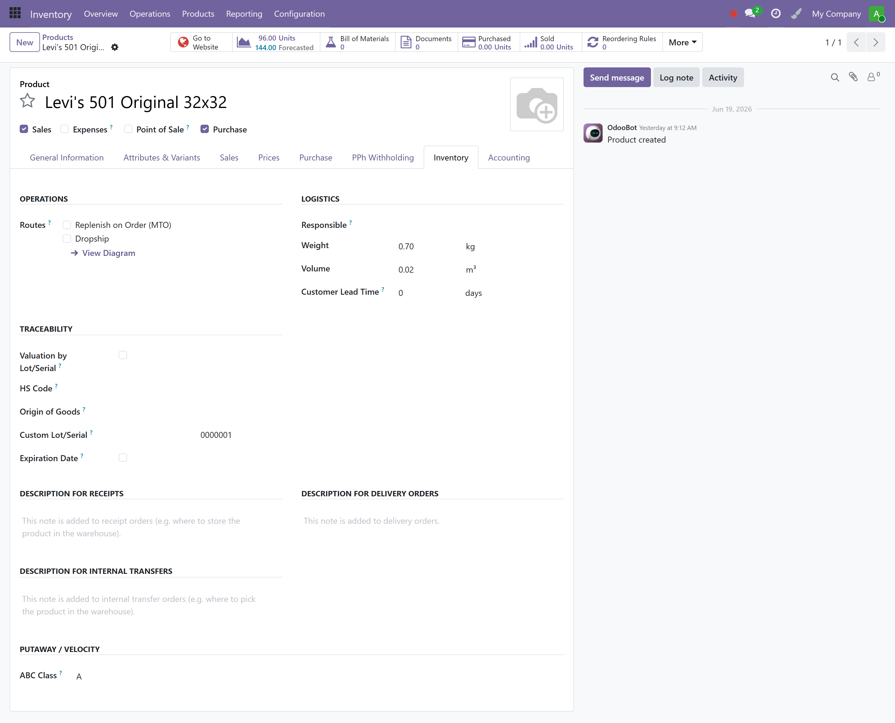
2.7 Routes & reordering
On the product’s Inventory tab, assign routes (Buy, Manufacture, Replenish on Order) and create reordering rules (min/max per warehouse, stock.warehouse.orderpoint). These are native and feed procurement; the custom transfer-order engine (§7) handles internal bin-to-bin replenishment independently.
3Warehouse & location configuration
A warehouse (stock.warehouse) owns a tree of locations. Zones and bins are just internal child locations you create under the warehouse’s stock location; the WMS engines target them by record or by domain.
3.1 – 3.2 Warehouse & multi-step routes Native
Create one warehouse per physical site (set its short code — it prefixes operation references like WH/IN/00002). On the warehouse, choose the incoming and outgoing steps:
| Steps | Locations created & when to use |
|---|---|
| 1-step | Receive straight to stock / deliver straight out. Simplest; fine for small sites. |
| 2-step | Input → Stock (receive then putaway) / Pick → Ship. Enables a putaway leg — recommended when using the putaway engine. |
| 3-step | Input → QC → Stock / Pick → Pack → Ship. Adds an inspection & pack stage — pair with Quality (§8). |
3.3 Location hierarchy, types & bins Native
Each location has a usage type that defines its role:
Model the floor as internal locations: a zone (e.g. Zone A – Fast Movers) with bins beneath it (A-01-01, A-01-02, …). The seeded demo below uses exactly this pattern, which the putaway and transfer engines then target.
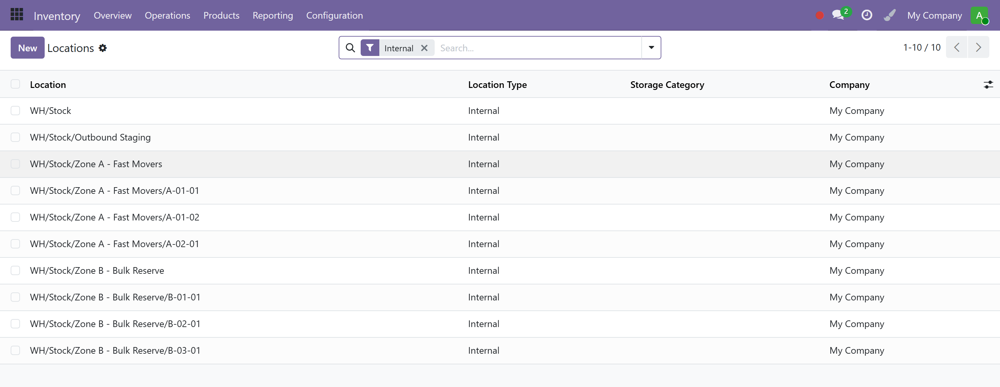
3.4 Bin volumetric capacity Custom
Each location gains a custom Volume Capacity (m³) field plus a computed Volume Used (m³). Set capacity on bins you want to slot by volume; the by_volume putaway rule rejects a bin when used + incoming > capacity and scores remaining fit otherwise.
| Field | Type | Purpose |
|---|---|---|
| volume_capacity_m3 | Editable, per location | Physical bin capacity; 0 = volume scoring disabled for that bin. |
| volume_used_m3 | Computed from quants | Σ(product.volume × quantity) currently in the bin. |
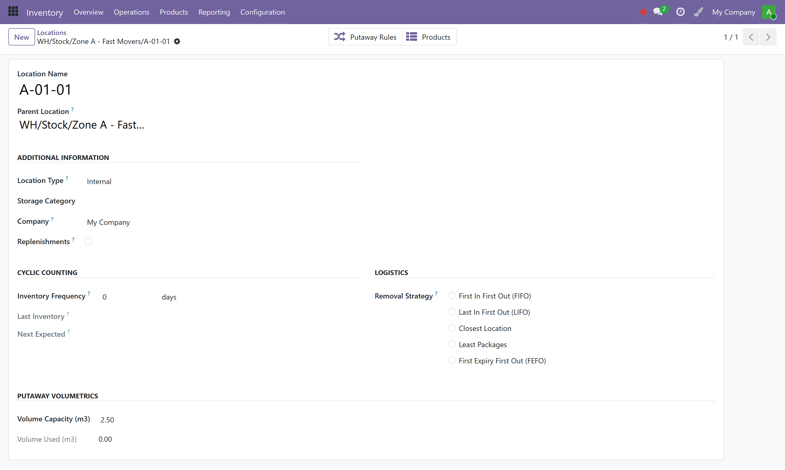
by_temperature with ambient/chilled/frozen), not via a native location field — tag your cold/ambient bins by naming convention and point the rule’s target/domain at them.3.5 Storage categories & removal strategies Native
Native Odoo offers storage categories (capacity by weight/volume/package) and per-location removal strategies (FIFO / LIFO / FEFO / Closest). Use FEFO for expirable stock so picks consume the soonest-to-expire lot. The custom putaway engine complements native putaway rules — you can run either or both; one active custom strategy per warehouse is enforced.
4Operation types & routes Native
Operation types (a.k.a. picking types, stock.picking.type) classify every transfer. Their code — incoming, outgoing, internal — and default source/destination locations drive both native moves and the custom hooks.
| Setting | Effect |
|---|---|
| code | Classifies the transfer. The putaway engine fires only on incoming move lines. |
| Default Source / Destination | Pre-fills move locations (e.g. Vendors → Input). |
| Reference Sequence | Generates references like WH/IN/00001. |
| Create Backorder / Reservation | Standard partial-fulfilment behaviour. |
incoming transfer, the putaway engine automatically proposes a destination bin (see §5). No extra configuration is needed beyond having an active strategy on the warehouse.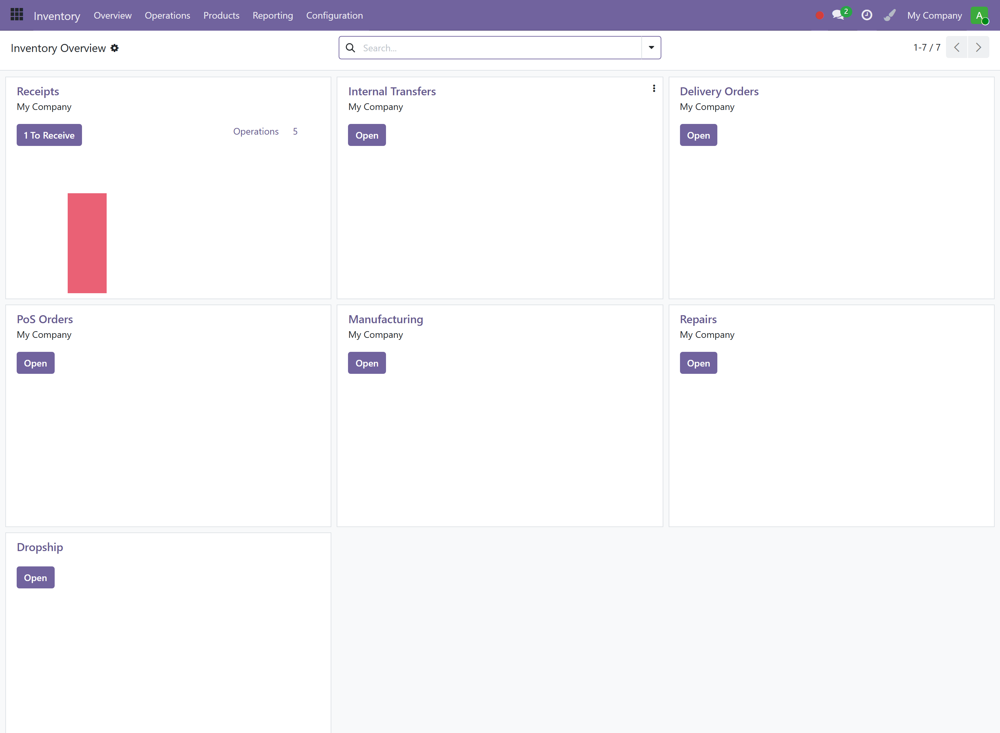
5Putaway engine Custom
Configure one putaway strategy per warehouse, holding an ordered set of rules. On goods receipt the engine scores candidate bins (0–100) and either auto-applies the winning bin or surfaces a suggestion for the operator.
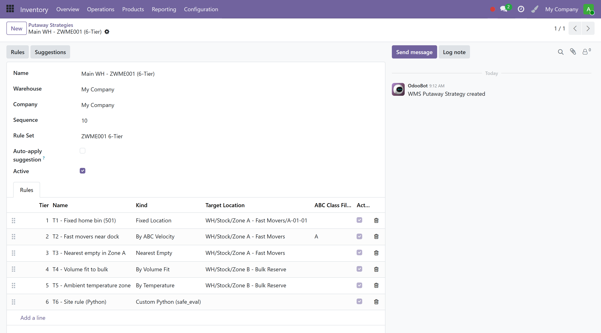
ZWME001 6-Tier with six rules across tiers 1–6.Strategy fields
| Field | Purpose |
|---|---|
| warehouse_id | One active strategy per warehouse (DB-enforced). |
| rule_set | zwme001_6tier · abc · fefo · custom. ZWME001 enforces tiers 1–6. |
| auto_apply_suggestions | If on, the engine rewrites the move-line destination automatically (no operator step). |
Rule fields & the seven strategies
| Field | Purpose |
|---|---|
| tier | 1–6; lowest tier with a positive score wins, ties broken by score. |
| kind | fixed_location (100) · by_abc_velocity (A/B/C) · nearest_empty (85) · by_volume (60–100, rejects oversize) · by_temperature (75) · zone_round_robin (70) · custom_python (sandboxed). |
| target_location_id / target_location_domain | A fixed bin, or a domain of candidate bins to score. |
| abc_class, temperature_zone | Optional filters for velocity/temperature rules. |
| custom_python | safe_eval expression returning (location_id, score) for site-specific logic. |
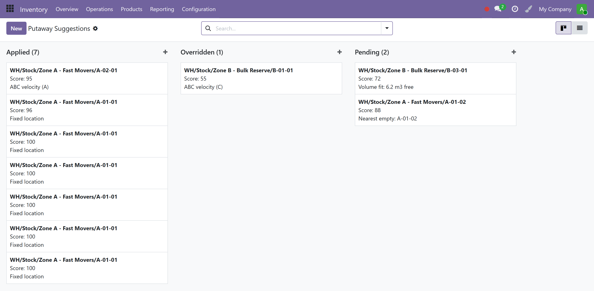
custom.putaway.engine.apply_top_proposal(); a confidence above 90 (with auto-apply on) rewrites the destination, otherwise the suggestion waits for review on the handheld.6Cycle counting Custom
Define plans that periodically generate count sessions; counters record actuals on lines; a supervisor approves variances before any stock is adjusted.
| Plan field | Purpose |
|---|---|
| method | Sampling: abc_velocity · random · by_zone · by_value · last_counted. |
| frequency | daily · weekly · monthly · quarterly · adhoc. |
| target_count_per_period | How many lines to sample each run. |
| next_run_date / state | A daily cron generates a session when due; active/paused toggles the plan. |
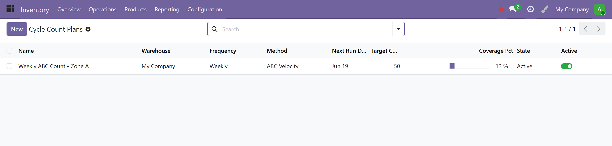
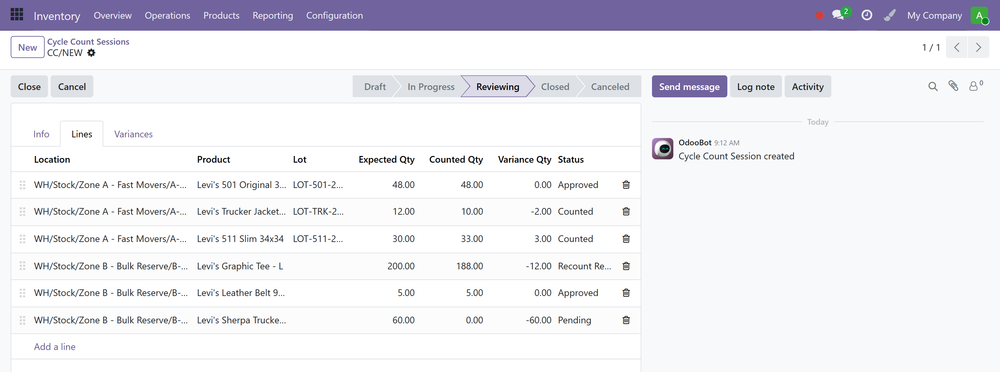
Session states run draft → in_progress → reviewing → closed; lines carry pending → counted → approved / recount_required / skipped. On approval a corrective stock.move is created and the variance value rolls up to the session.
7Transfer orders & replenishment Custom
Configure transfer-order rules that fire on triggers and materialise into real internal stock.moves (with a barcoded pick slip). A cron evaluates active rules on a schedule.
| Rule field | Purpose |
|---|---|
| trigger | low_water_mark · expiry_approaching · zone_consolidation · picking_replenishment · manual. |
| source_location_domain / target_location_domain | Odoo domains selecting donor/receiver bins. |
| low_water_qty | Threshold below which a bin is replenished. |
| expiry_days_ahead | Window for routing near-expiry lots to quarantine/scrap. |
| priority / schedule_interval_minutes | Evaluation order and cadence. |
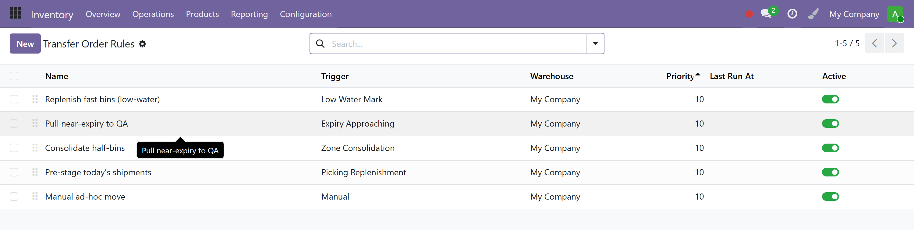
8Quality control Custom
Configure quality points that attach checks to operations; failures raise an NCR alert that drives a CAPA, with tamper-evident e-signatures throughout.
| Point field | Purpose |
|---|---|
| operation | incoming · manufacturing · outgoing · ad_hoc — when the check applies. |
| check_kind | instructions · pass_fail · measure (with min/max) · visual. |
| frequency | every · first · random · periodic. |
| measure_min / measure_max / measure_uom_id | Tolerance band for measurement checks. |
| default_test_id | Reusable test template seeding the check’s inspection lines. |
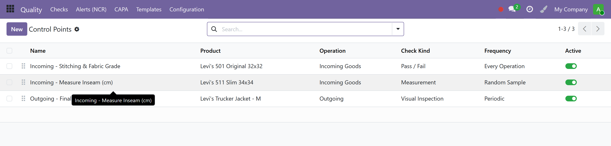
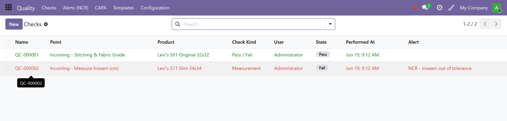
9Handheld (HHT) devices Custom
Enrol every physical scanner before it can call the API. Each device gets an auto-generated key/secret used to sign requests.
| Field | Purpose |
|---|---|
| device_id | Physical serial / browser fingerprint; unique per tenant. |
| model | zebra_tc21/52/72 · honeywell_ct40 · generic_browser · other. |
| api_key / api_secret | Auto-generated, write-protected; rotate via the Regenerate Secret wizard. |
| allowed_cidrs | Comma-separated CIDR allow-list (per device). |
| enabled / status | Toggle; status computes Active / Disabled / Quarantined. |
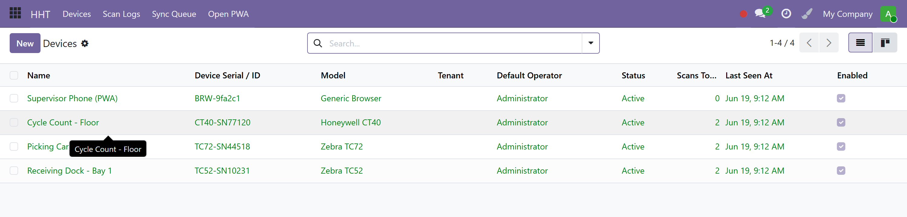
/api/hht/* requires HMAC-SHA256 request signing, timestamp-drift & nonce replay checks and the per-device CIDR allow-list. Thin keyboard-wedge scanners can post to /api/hht/datawedge under an IP allow-list.10Barcode, labels & printers Custom
Barcode formats
custom.barcode.format lets you auto-generate product/location barcodes: choose a symbology (Code128, EAN-13, EAN-8, QR), a prefix/suffix and a sequence, scoped to the models it applies to.
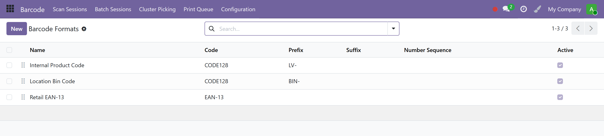
Label templates
| Field | Purpose |
|---|---|
| paper_format | zebra_2x1 · zebra_4x6 · thermal_50x30 · a4_30up · custom (uses width/height mm). |
| output_mode | zpl (Zebra) · escpos (thermal) · pdf. |
| template_source | The ZPL/ESC-POS body or QWeb source. |
| applies_to | The model the label is for (product, location, pallet…). |
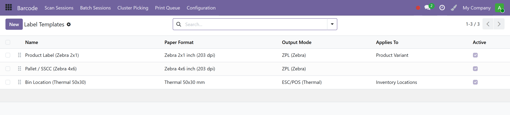
Printer configuration
| Field | Purpose |
|---|---|
| printer_type | zebra_network (raw 9100) · zebra_usb (local agent) · escpos_network · cups. |
| host / port | Network address (default port 9100). |
| cups_queue | Queue name when printer_type = cups. |
| label_template_id | Default template for this printer. |
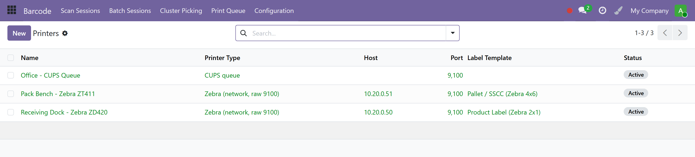
Jobs are spooled to custom.print.queue and dispatched by a cron, so a momentary printer outage doesn’t block the operator.
11Operational features at run-time
With configuration in place, the day-to-day flows behave as follows:
Receiving & directed putaway
Goods are received against a PO/transfer (scan-in via custom_barcode or the HHT Receive page). As move lines are created, the putaway engine proposes bins; large receipts can be validated in the background via queue_job to avoid browser timeouts.
Picking — single, batch & cluster
custom_barcode provides a single-picking scan session, a batch session (scan once, auto-distribute across orders) and a cluster run (group lines by source bin for one efficient walk).
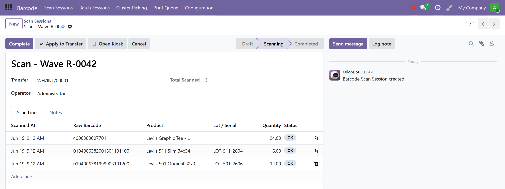
Internal transfers & replenishment
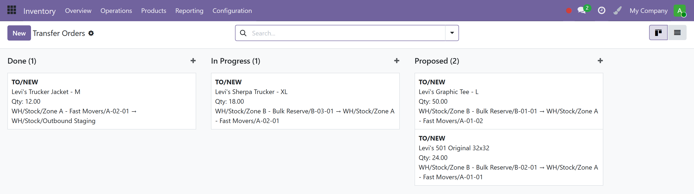
Scanning on the handheld
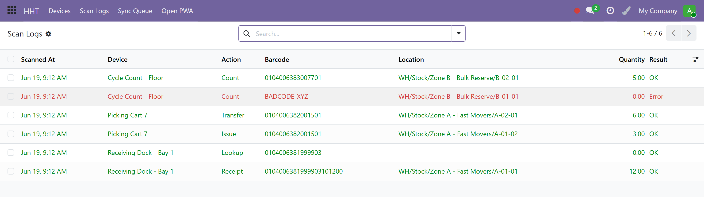
Cycle counting & quality
Counters work the session lines on the floor; supervisors approve variances. Quality checks gate inbound and outbound operations, raising NCRs and CAPAs on failure.
12Automation, security & audit
Scheduled actions (cron)
| Cron | Cadence | Does |
|---|---|---|
| Cycle-count session generator | Daily | Creates sessions from due plans. |
| Transfer-order evaluate & materialize | Per-rule interval | Fires active rules, creates proposed TOs. |
| Print-queue processor | Frequent | Renders & dispatches queued labels. |
| HHT sync-queue purge | Daily | Removes applied/deduped offline events > 30 days. |
Security & audit
- Every WMS model mixes in
pdp.audited.mixin+mail.thread— who changed what, when, with chatter. - The handheld scan log is append-only and immutable.
- Approval gates: putaway auto-apply has a confidence threshold; cycle-count variance posting is supervisor-only.
- Multi-tenant: devices, logs and stock are scoped per tenant (DB-per-tenant).
13End-to-end setup checklist
To stand up a WMS-enabled warehouse on a fresh tenant:
- Products — mark storable; set tracking (lot/serial), UoM, volume, weight, barcode, ABC class, standard price, routes & reordering rules.Inventory ▸ Products
- Warehouse — create it with a short code; choose 2- or 3-step receipts/deliveries.Inventory ▸ Configuration ▸ Warehouses
- Locations — build zones & bins as internal locations; set volume capacity on bins to be slotted by volume.Inventory ▸ Configuration ▸ Locations
- Removal strategy — set FEFO on locations holding expirable stock; enable Expiration Dates.Inventory ▸ Configuration ▸ Settings / Locations
- Putaway strategy — one active strategy per warehouse; add tiered rules; decide auto-apply.Inventory ▸ Configuration ▸ Putaway Strategies
- Cycle-count plans — pick a sampling method & frequency; assign counters & the supervisor group.Inventory ▸ Operations ▸ Cycle Count ▸ Plans
- Transfer-order rules — configure replenishment/expiry/consolidation triggers & domains.Inventory ▸ Operations ▸ Transfer Order Rules
- Quality points — attach incoming/outgoing checks with tolerances & test templates.Quality ▸ Configuration ▸ Quality Points
- Devices — enrol handhelds; set CIDR allow-lists; distribute keys.HHT ▸ Devices
- Labels & printers — define label templates & printer endpoints; map default templates.Inventory ▸ Configuration ▸ Labels / Printers
14Selection-value reference
| Field | Allowed values |
|---|---|
| Putaway rule kind | fixed_location · nearest_empty · zone_round_robin · by_volume · by_temperature · by_abc_velocity · custom_python |
| Putaway rule_set | zwme001_6tier · abc · fefo · custom |
| Suggestion status | pending · accepted · overridden · applied · rejected |
| Cycle plan method | abc_velocity · random · by_zone · by_value · last_counted |
| Cycle plan frequency | daily · weekly · monthly · quarterly · adhoc |
| Cycle session state | draft · in_progress · reviewing · closed · canceled |
| TO rule trigger | low_water_mark · expiry_approaching · zone_consolidation · picking_replenishment · manual |
| TO state | draft · proposed · in_progress · done · canceled |
| HHT device model | zebra_tc21 · zebra_tc52 · zebra_tc72 · honeywell_ct40 · generic_browser · other |
| Scan-log action / result | receipt · issue · transfer · count · handover · lookup | ok · error · pending_sync |
| Quality operation / check_kind | incoming · manufacturing · outgoing · ad_hoc | instructions · pass_fail · measure · visual |
| Label output_mode / Printer type | zpl · escpos · pdf | zebra_network · zebra_usb · escpos_network · cups |